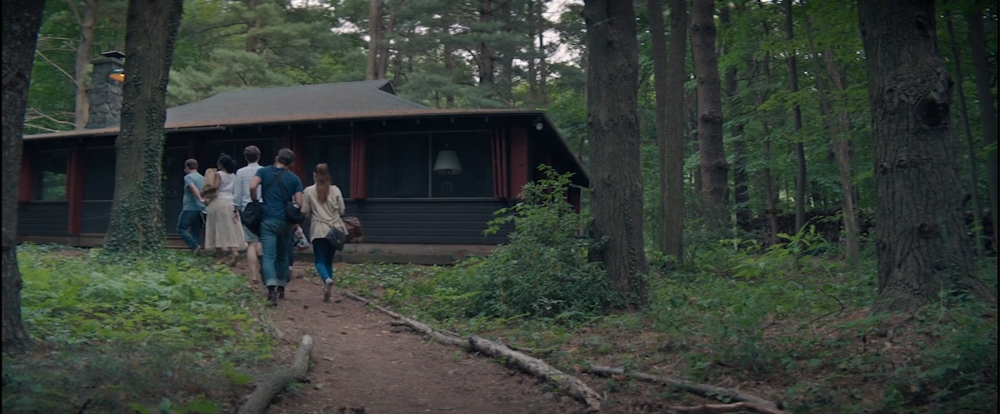
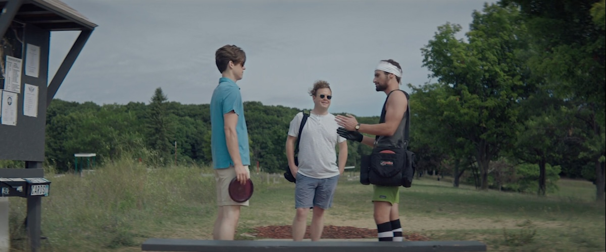
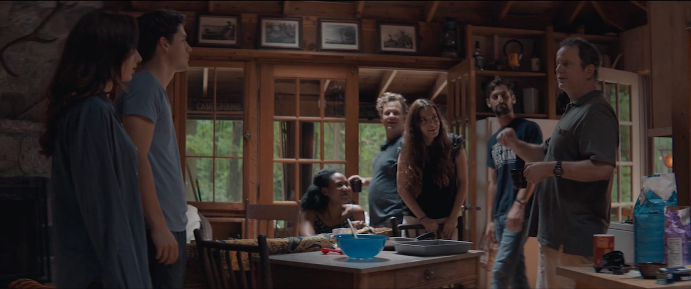

The filming locations for Mercury in Retrograde are variously given as Allegan, Fennville, and Saugatuck. All three are towns in Allegan County, Michigan, a corner of Western Michigan known for being on Lake Michigan and for producing your prescription drugs. Saugatuck, on the mouth of the Kalamazoo River, is an art colony and incongrous gay mecca in the middle of Dutch Reformed country. My family rented a cabin there for decades, and I knew the area well even before I went to college in nearby Kalamazoo. Holland, the setting of the recent, eponymous Holland, is just over the county line to the north.
This accounts for my interest in Mercury in Retrograde, which is a movie about three couples in a cabin in the woods for the weekend but is not a horror movie. It’s a low-key drama about three couples who loosely know each other and who spend a weekend together away from the city. There are no creatures, no mysterious forces at play. To misquote Sartre, in this film horror is other people. I don’t usually watch this sort of movie, and I’m really glad I did.
The cabin in question is the Fern Hollow Cabin, which is available for rental. At the risk of a digression, it’s not really in Fennville. To my mind it’s in Ganges, west of the Blue Star Highway and south of the I-196 interchange. Never made it to the What Not Inn for dinner but was always curious. The location is a perfect distillation of cabin life in that part of the state. You’re in dune country, with the trees so thick that the light barely penetrates. Myrtle covers the ground. In the evening rain patters on the cabin’s roof. I was having feelings before the action even got going.
The film
Our three couples live in Chicago and have made a house party in Michigan for the weekend. They’re Peggy and Wyatt (Najarra Townsend and Shane Simmons), Isabelle and Richard (Roxane Mesquida and Kevin Wehby), and Golda and Jack (Alana Arenas and Jack C. Newell). Peggy is the odd one out; she’s the new girlfriend and she’s meeting this friend group. Jack and Golda are married and Jack’s family owns the cabin. Isabelle and Richard are in a long-term relationship.

The film opens with everyone seated around a fire pit as Peggy reads everyone’s horoscopes. Astrologists contend that when the planet Mercury is in retrograde (appearing to travel backward), communication suffers, and miscommunication is the theme of the film. The film takes its time with this opening scene, slowly panning around the firepit as Peggy reads. Inevitably, parts of each horoscope miss the mark, and some hit too close to home. Some will feel very relevant as the weekend progresses. This is a continous tracking shot and it’s really impressive.
The characters are sharply-drawn and well-acted. Peggy is eager to please, but you sense trouble under the surface. Wyatt isn’t a bad person but he’s young and seems unaware that someone could be concealing things. Isabelle, originally from France and played by a French actress, is that curious mix of fun, intelligent, lofty, and outright rude that you sometimes meet. Richard is self-involved to the point of parody. Golda is the earth mother who seems to be the most together. Jack, the Libra, takes it all in stride. Golda and Jack appear to be in their early forties; the others feel a little younger. Still, these are all people who were born in the 1980s or maybe the early 1990s.
In the morning, the couples all split up. The menfolk head off to play disc golf while the women, after doing yoga together in the woods, walk into town to visit the farmer’s market and then get coffee. This is all good character work. Let’s start with the men. Richard, with his headband and beard trimmed just so, is a veteran player and immediately starts trashing the quality of the course. Jack, who has played before and doesn’t take things nearly so seriously, starts fucking with him. Wyatt has never played before but seems happy to be outside. When Richard starts lecturing him about how to play he takes it in good grace. A later scene where they search for a missing disc rings true to anyone who’s played. Richard’s probably too proud to stick a Tile on the underside of his disc and ruin the aerodynamics.

Back at the cabin, you sense a connection developing between Golda and Peggy. Yoga is Golda’s thing and she’s sharing and Peggy is responding to that. Isabelle participates but you can tell she thinks some of this stuff is total bullshit and she’s above that. Over coffee in Allegan, you start to sense distance between Golda and Isabelle and the reason for it. Isabelle probably bitched about Richard to Golda, Golda told Isabelle to dump his ass, and Isabelle knows she should but she wants to make it work for reasons that she probably can’t explain to anyone, least of all herself. Raise your hand if you’ve never given unwelcome advice. Being “correct” makes it worse.
The couples unite in the afternoon to go swimming in Lake Michigan, though most of them stay on the beach. You sense that it’s warm enough that people are in shirtsleeves, but that water’s still a tad cold. The Fenn Valley Vineyard would have been another good choice for a couples activity. 10-minute drive from the cabin, great wine tastings. For years, I gave the Lakeshore Demi-Sec as a wedding gift.
In the evening the couples divide again. I find this an odd dynamic personally, but it feels natural given the characters. The men have a boys’ book club; they sit around, drinking scotch and smoking cigars, discussing Dashiell Hammett’s The Glass Key. Personally, I’m kinda appalled, but I’ve probably got a skeleton that pompous in my closet, so I’ll move on. This goes the way you expect–by the end, everyone’s had too much to drink and is barely making any sense. Jack is falling asleep. Richard is insisting on his point long after everyone else lost interest.
Meanwhile, the women have hit a bar that looks like every townie bar in that part of the state. They shot this scene in Chicago, but it reminds me of the Sand Bar Saloon in Saugatuck. We established earlier that Peggy doesn’t drink because her father was an alcoholic. Isabelle starts getting pushy as the night goes on, and eventually guilts Peggy into a beer, after which, giving in to her annoyance with Richard, she goes off to hit on a local. This man is the most Michigan man this side of Paul Walter Hauser I can imagine. He went to Ferris State to learn welding and pulls for Sparty on Saturdays.
Something I noticed when writing this post is that you rarely see any of the women together during these bar scenes. The camera focuses either on who’s speaking or someone’s reaction to it, and it lingers. This is a good choice–all three actors are doing an excellent job and all three characters have some emotional baggage that they’re dealing with. Isabelle’s we know about: her relationship with Richard has failed and she’s finally admitting that to herself. Whether she feels like telling him is another matter. A later interaction between the two establishes that Isabelle being a mean drunk isn’t new behavior.
Back at the table Golda apologizes for Isabelle’s behavior, at which point Peggy opens up to her. This is fast, but not implausiblely so–you could feel the trust developing between the two, and sometimes you need to confess to someone you don’t know. There can be relief in exchanging vulnerabilities. Peggy has a long, bad history of substance and sexual abuse that she hasn’t been able to discuss with Wyatt. Golda, for her part, shares that she and Jack are trying to get pregnant, but she had an abortion (with Jack’s knowledge) a decade ago and is worried that she can’t have children but hasn’t confided in Jack yet. Meanwhile, Isabelle is making out with the townie but they don’t get to second base before it’s time to go back.

In the morning Jack’s dad (Jack senior) swings by to make cinnamon rolls as everyone nurses a hangover. There’s a familiar, weary politeness. Saturday night, what everyone can remember of it, anyway, was fucked up but we’re too tired to argue about it. The film closes with Peggy narrating the fate of our characters after the weekend. The friend group gradually breaks up. Isabelle breaks up with Richard and returns to France. Wyatt dumps Peggy. Golda and Jack do get pregnant, and grow closer to Peggy, who babysits for them. This feels a little perfunctory, and maybe unnecessary, but Peggy’s telling the story and this is how the story of the weekend ends.
Some thoughts
I was surprised at how much I enjoyed myself. This was a blind watch in a genre that I usually avoid: all I knew going in was the location and a rough outline of the plot. I like it when a movie feels grounded in a location. The grounding doesn’t have to be that strong; Foes did it very simply while Blood Hook never quite managed it, despite the longer running time (and giant fish).
It’s a little disconcerting to watch a movie and see yourself, or parts of yourself, on screen. I’ve been Jack–slowly drinking and nodding off during a discussion that no longer interests me. I’ve been Wyatt, emotionally obtuse at the wrong moment (and also wrongly attired for disc golf). To my real chagrin, I’ve been Isabelle, unable to comprehend that why someone chooses not to drink isn’t my business. I’ve been Peggy; feeling my way into a group of friends who are not (yet) my friends.
The acting in this movie was a revelation. All six leads deliver rounded, believable performances. It doesn’t feel fair to pick a standout, but I do want to mention Najarra Townsend and Alana Arenas. Their scenes together at the bar are the heart of the movie and they both do incredible work. Liz and I went and hunted up some of the horror shorts that Townsend’s been in like Feeding Time (fun) and Play Violet for Me (less so) and she ought to break out given the right role. We’re also planning to give some of director Michael Glover Smith’s other movies a go, our genre preferences notwithstanding. This was fresh and exciting and we were never bored.